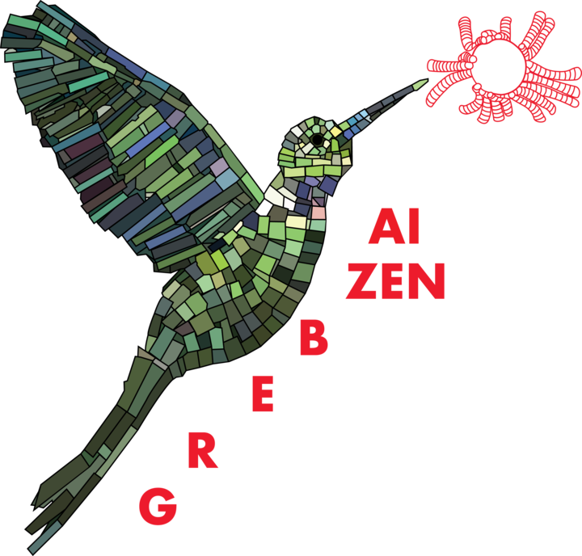
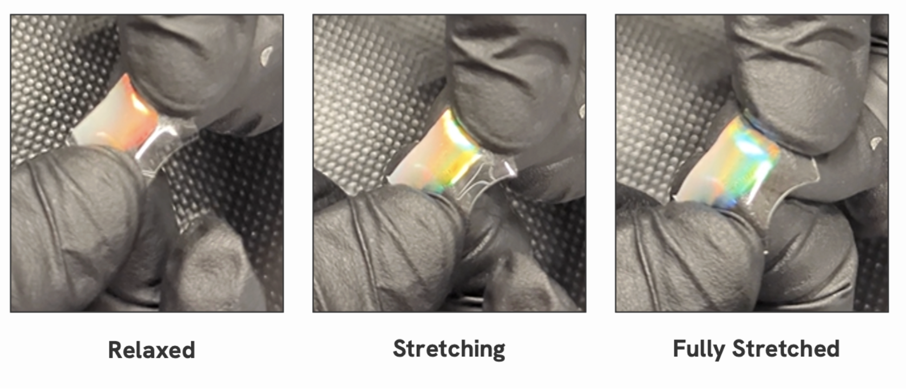
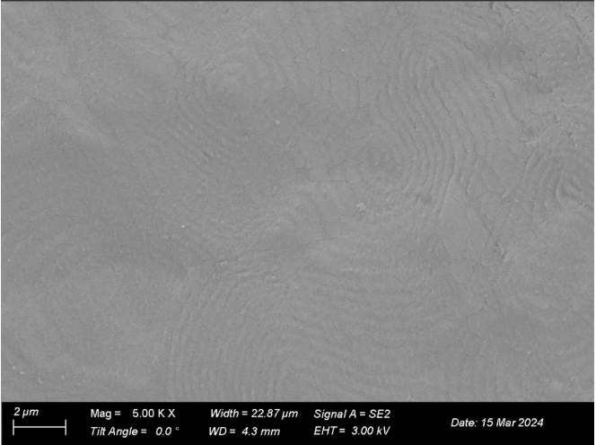
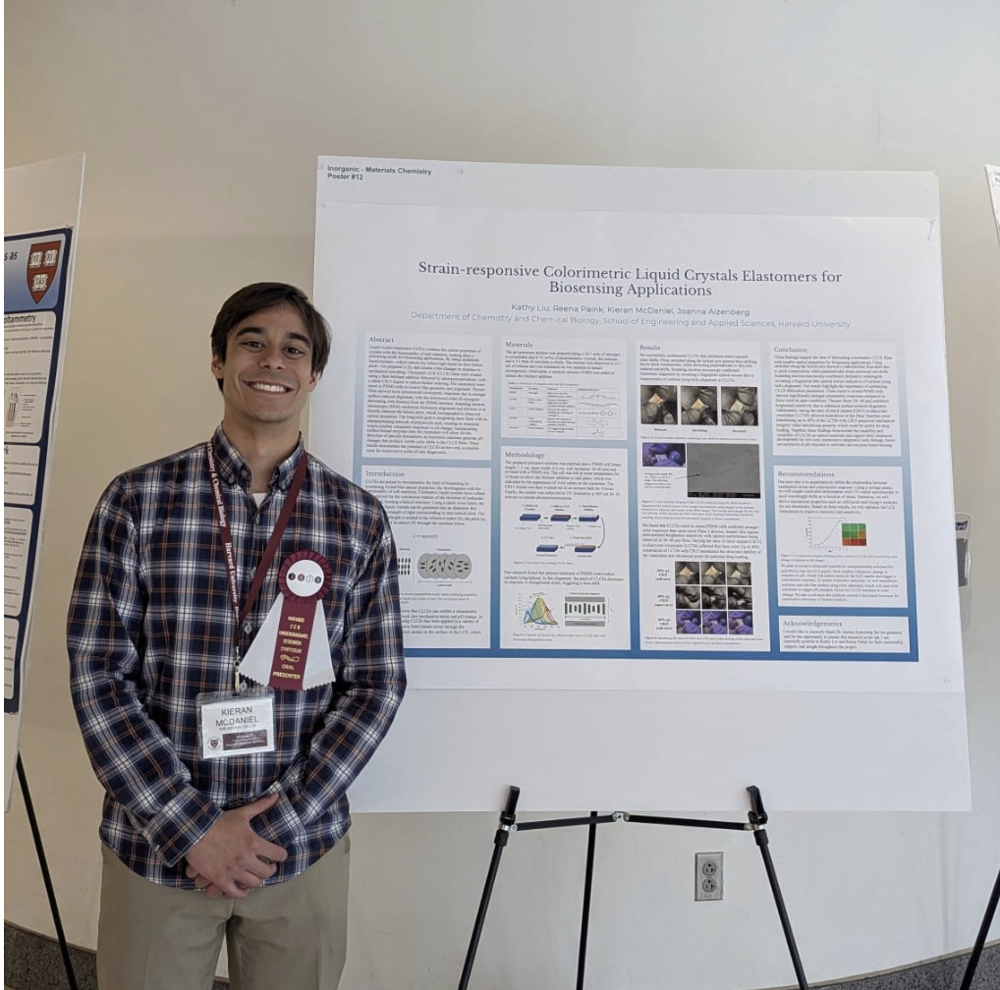
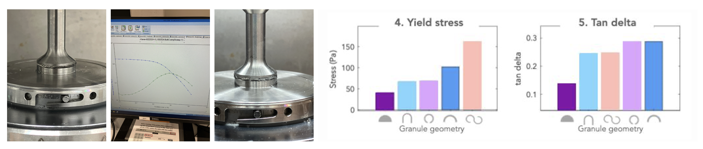
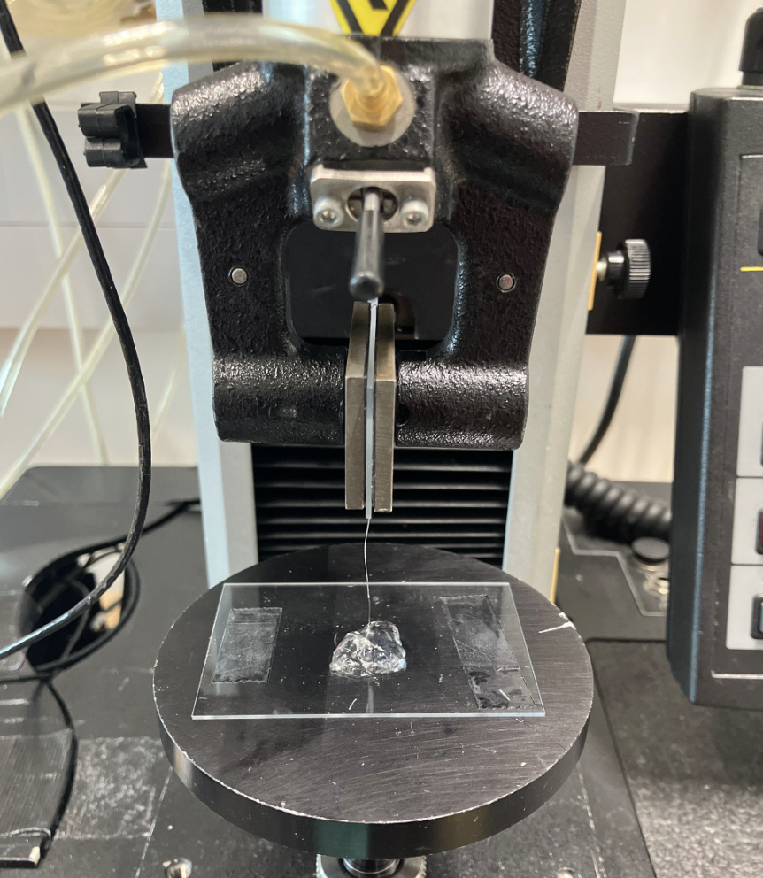

Undergraduate Researcher
Project #1: Micro-fluidic Device Fabrication
Overview: Established proof of concept for a novel optoporation-based drug delivery method for suspension cells. My role was designing and fabricating four different microfluidic device geometries to optimize cell residence time and promote mixing between the solvent and the cells. Lymphoblast cells were irradiated with a femtosecond laser, opening temporary membrane pores and enabling delivery of 40 kDa FITC-Dextran.
Skills Learned: I developed photomasks in AutoCAD and learned how to fabricate microfluidic devices in the cleanroom using photolithography. I characterized device properties using optical profilometry. I also learned how to align and collimate an infrared laser, gaining familarity with optical tools like dichroic mirrors and beam profilers. Finally, I learned how to passage cells and analyze cell transfection using flow cytometry.

Photomasks
Photolithography masks with different channel geometries were designed in AutoCAD.

Microfluidic Channels
Device channels visualized under a microscope.

Optical Profilometry
Characterizing channel height before experiments.

Lymphoblast Cells
Suspension cells under a microscope.

Optical Setup
Aligning and collimating a near-IR laser.

Data Analysis
Flow cytometry to analyze cell viability.
Engineering Skills
- AutoCAD
- Photolithography
- Microfluidics
- Cell Passaging
- Optical Setups
- Laser Collimation
- Cleanroom Procedures
- Flow Cytometry
- Optical Profilometry
- Fluorescence Microscopy
Project #2: Liquid Crystal Elastomers for Biosensing
Overview: Synthesized liquid crystal elastomers that exhibited color changes in response to mechanical deformation. Optimized the color response by changing the ratio of mesogen to cross-linker and altering UV photo-polymerization conditions. Presented work at the Harvard Chemistry and Chemical Biology Research Symposium in 2025 and won best poster.
Skills Learned: I learned how to use levers such as dopants, mesogen:crosslinker ratio, and UV intensity to optimize the outcome of a two-step photopolymerization reaction. I explored the thickness dependence of liquid crystal alignment and experimented with different surface treatments to increase alignment uniformity and therefore color sensivity. I also learned how to take SEM images to analyze molecular structures within the elastomers.

Liquid crystal elastomer color response.

SEM cross section image showing fingerprint texture showing liquid crystal alignment.

I presented a poster and an oral presentation with my findings at the 2025 Harvard Chemistry and Chemical Biology Research Symposium and won best poster.
Engineering Skills
- SEM
- UV Photopolymerization
- Poster Presentation
- Oral Presentation
- Thiol-Micheal Addition
Project #3: Granular Hydrogels
Overview: Developed shear-thinning, injectable granular hydrogels for drug delivery and investigated the impact of microgel morphology on their rheological properties.
Skills Learned: I learned how to use a rheometer to analyze viscoelastic properties such as storage and loss moduli. I also learned how to use the intstron machine to assess the tensile strength of the hydrogels.

Viscoelastic properties of granular hydrogels.

Testing granular hydrogels on the instron to measure tensile strength.